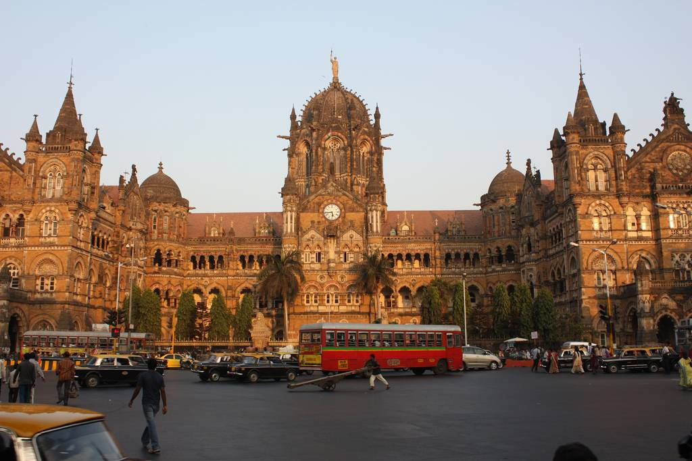

Chhatrapati Shivaji Maharaj Terminus

Chhatrapati Shivaji Maharaj Terminus (CSMT) formerly known as Victoria Terminus is a historic railway station and a UNESCO World Heritage Site in Mumbai, Maharashtra, India which serves as the headquarters of the Central Railways. The station has been designed by Frederick William Stevens according to the concept of Victorian Italianate Gothic Revival architecture and meant to be a similar revival of Indian Goth (classical era) architecture. The station was built in 1887 in the Bori Bunder area of Mumbai to commemorate the Golden Jubilee of Queen Victoria.

HOW TO REACH ?
Nearest Airport:Mumbai
Nearest Railway Station:Mumbai
Nearest Bus Stand:Mumbai